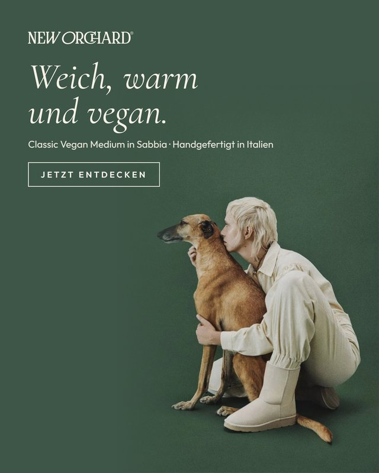
Test podobni do klientów · D3 koszyki
78 kliknięć · 29 €
Tydzień przygotowań do Green Week. 9 zamówień za 554 € (jedno z nich anulowane), po zwrotach 399 €, czyli tyle samo co rok temu (400 €, 4 zamówienia). Ale nie sprzedała się ani jedna para butów, kupowano same akcesoria. Sklep internetowy znowu sprzedaje: 3 zamówienia (270 €), w dwóch użyto kodu za zapis do newslettera. Reklama Meta kosztowała 224 € i nie dała zakupu, więc 13 i 14.11 wyłączyliśmy kampanie bez wyniku. Pieniądze przenieśliśmy na Green Week: kampania na 100 € dziennie jest gotowa (51 reklam zatwierdzonych przez Meta), a od dziś zbieramy maile na early access 22.11. Cel Green Week: 5 000 €.
Ten sam tydzień w 2025 (10–16.11) kontra teraz. Sprzedaż: wszystkie zamówienia w Shopify (sklep + marketplace'y) po zwrotach, reklama według Meta. Niedziela 15.11 jeszcze trwa.
Wszystkie zamówienia w Shopify (sklep internetowy + marketplace'y), ten rok i rok temu, po zwrotach.
| Tydzień | 2026 | 2025, ten sam tydzień | Zmiana |
|---|---|---|---|
| Poprzedni 2–8.11 po raporcie doszły 2 zamówienia, w tym 1 ze sklepu | 317 € 7 zam. | 1 416 € 12 zam. | −78 % |
| Ten 9–15.11 dane do niedzieli 22:00 | 399 € 9 zam. (1 anulowane) · 554 € przed zwrotami | 400 € 4 zam. | 0 % |
| Przyszły 16–22.11 mail 19.11, early access 22.11 | – | 2 362 € 16 zam. | |
| Green Week 23–30.11 −40 % na wszystko | – | 5 560 € 34 zam. (tydzień 24–30.11) | cel 5 000 € |
Rok temu w tym tygodniu 504 € przyszło dopiero w niedzielę, więc dzisiejszy dzień może jeszcze coś zmienić. Zwroty w tym tygodniu: 126 € z wcześniejszego zamówienia (zwrot zaksięgowany 9.11) i anulowane zamówienie #1544 na rękawiczki. W piątek 13.11 nie było ani jednego zamówienia.
Sezon to wrzesień–styczeń. Wszystkie zamówienia w Shopify (sklep + marketplace'y).
| Miesiąc | Sezon 2026/27 | Sezon 2025/26 | Zmiana |
|---|---|---|---|
| Wrzesień | 3 912 € 14 zam. | 1 427 € 7 zam. | ×2,7 |
| Październik | 7 746 € 40 zam. | 2 109 € 15 zam. | ×3,7 |
| Listopad do 15.11 | 1 221 € 19 zam. | 12 123 € do 15.11: 3 698 €, 26 zam. | −67 % |
| Grudzień | – | 6 984 € 54 zam. | |
| Styczeń | – | 6 970 € 47 zam. | |
| Razem | 12 880 € 73 zam. | 29 613 € do 15.11: 7 234 €, 48 zam. | +78 % |
Sezon do dziś jest o 78 % lepszy niż rok temu (12 880 € wobec 7 234 €). Listopad jest na razie o 67 % słabszy, a najważniejsza część listopada dopiero przed nami: rok temu od 16.11 do końca miesiąca przyszło ponad 8 400 €, z tego 5 560 € w tygodniu Green Week.
Ostatnie 7 tygodni: wartość wszystkich zamówień złożonych w danym tygodniu (Shopify: sklep + marketplace'y), bez anulowanych i bez odejmowania późniejszych zwrotów.
Wszystkie 9 zamówień tygodnia. Same akcesoria: czapki, rękawiczki, szale z kapturem i bluzy dla psa. 5 zamówień z marketplace'ów (Avocadostore 2, Syncee 2, W&B 1), 3 ze sklepu internetowego, 1 anulowane.
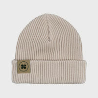
Czapka Beige Rękawiczki BlueRękawiczki Blue
Rękawiczki BlueRękawiczki Blue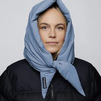
Szal z kapturem Blue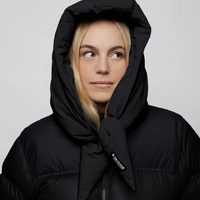
Szal z kapturem Black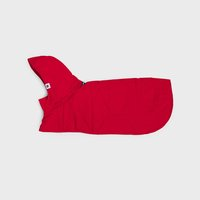
Bluza dla psa Red (XS)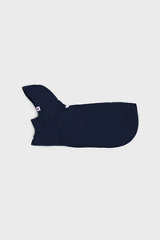
Bluza dla psa Navy (S) Czapka Black
Czapka Black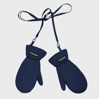
Rękawiczki NavyWnioski: akcesoria sprzedają się same, z marketplace'ów i z wyszukiwarki Google, bez reklamy. Kod −10 % za zapis do newslettera działa: dwa z trzech zamówień ze sklepu go użyły. Butów bez rabatu nikt nie kupił, ani w sklepie, ani na marketplace'ach. Zgadza się to z danymi z całego sezonu: buty sprzedają się w dużych akcjach (urodziny, Green Week, styczeń), a między nimi prawie wcale.
Dzień po dniu, w skrócie.
Do 13.11 test trzech grup w DE+AT, od 8.11 remarketing Medium Caramel z outletu, 9–14.11 reklama wizerunkowa, 10–14.11 rolka „Stop on your pair” na zasięg. Od 15.11 reklama early access. Kampania Green Week startuje 23.11.
| Kampania | Wydane | Kliknięcia | Koszyki | Koszt koszyka |
|---|---|---|---|---|
| Meta · test grup DE+AT (9–13.11, wyłączony) jedyne koszyki | 93 € | 170 | 3 | 31 € |
| Meta · rolka „Stop on your pair”, zasięg DE+AT (10–14.11, wyłączona) | 40 € | 15 | 0 | – |
| Meta · wizerunek „Vegan. Langlebig. Bequem.” (9–14.11, wyłączona) | 37 € | 35 | 0 | – |
| Meta · remarketing Medium Caramel −25 % (działa do 21.11) | 43 € | 15 | 0 | – |
| Meta · early access Green Week (od 15.11) nowa | 11 € | 62 | – | – |
| Meta · Green Week 2026 (start 23.11) | 0 € | – | – | – |
| Google · reklama na nazwę marki DE | 12 € | 21 | – | – |
Razem Meta 224 €, 297 kliknięć, 3 koszyki, 0 rozpoczętych płatności, 0 zakupów. Wszystkie 3 koszyki przyszły 11.11 z grupy „podobni do klientów”. Rolka na zasięg wyświetliła się 14 654 razy, ale prawie nikt nie wszedł z niej do sklepu. Rok temu w tym tygodniu Meta kosztowała 427 € i dała 1 zakup (252 €). Poprawka do raportu 5: reklama Google na nazwę marki działała też w zeszłym tygodniu i kosztowała 12 €, a nie 0 €.

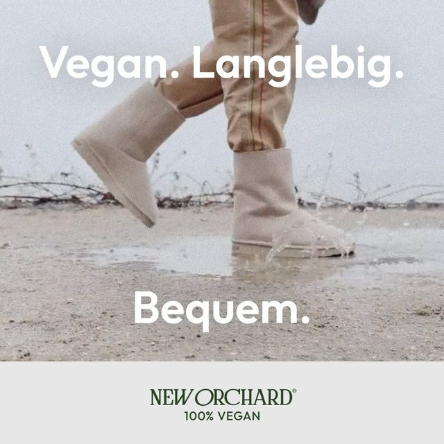
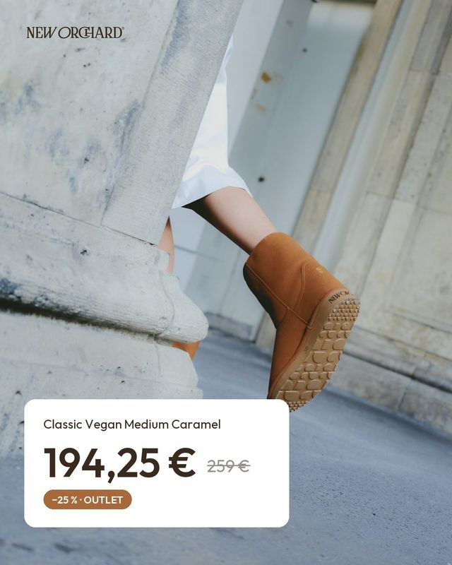
6 publikacji w tygodniu: 3 posty i 3 rolki. Razem 791 osób zasięgu i 51 polubień. Konto dotarło do 14 872 osób (razem z reklamą rolki), 477 wizyt profilu i 22 kliknięcia w link. Stories: 3 z Glore Luzern, Blickfang runda 2, Glore w niedzielę rano, zwycięzcy Blickfang i adoption story (7 slajdów z oznaczeniami). TikTok: 3 rolki 12–14.11, rolka z Karoliną ma 699 wyświetleń.
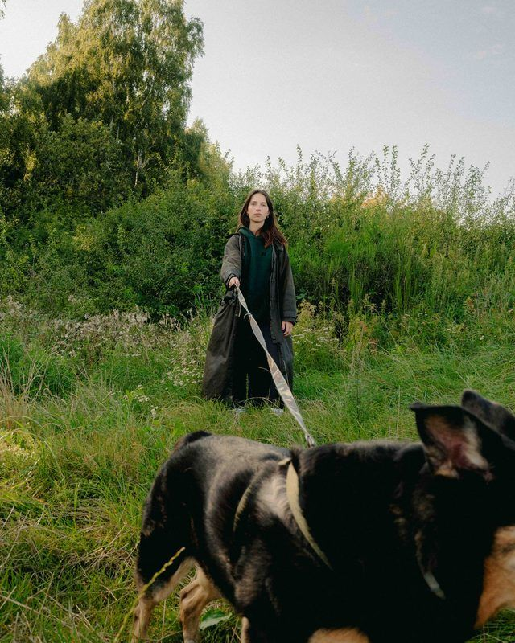
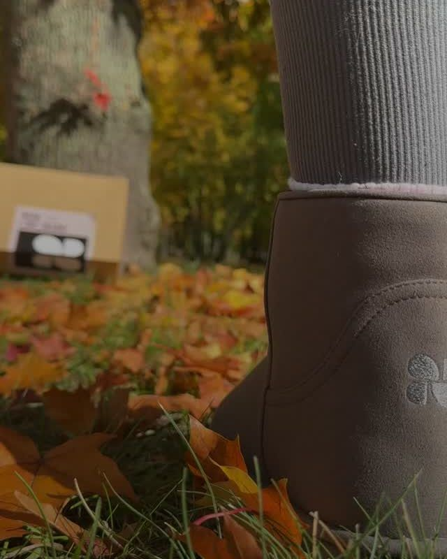
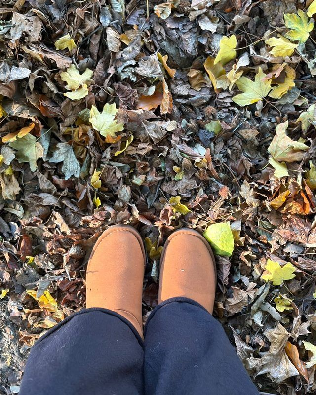
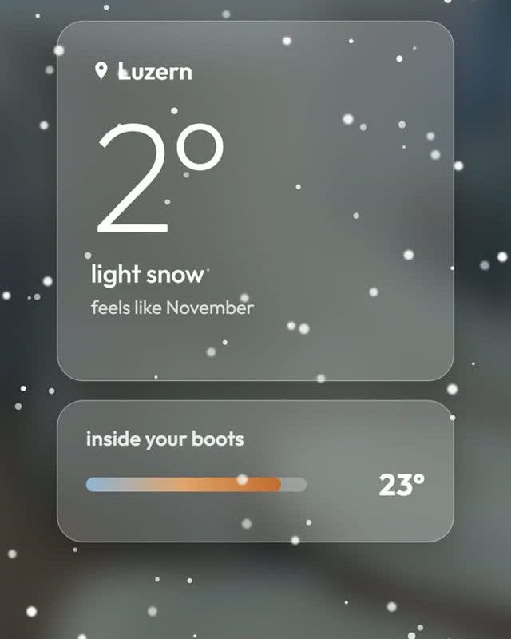
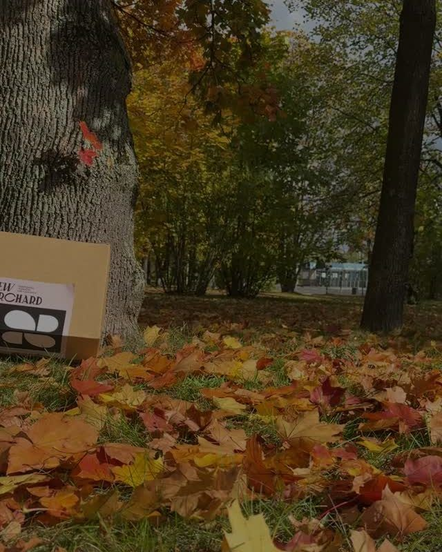
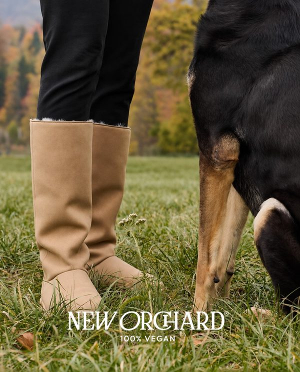
Najlepszy był zwykły post z psem (191 osób). Post z Roxy jest z niedzieli wieczór i jeszcze zbiera zasięg. Zasięg bez reklamy jest mały, 80–190 osób na publikację.
Dwie wysyłki do całej bazy bez CH: VegNews + Caramel 9.11 i outlet „Fresh Finds” 13.11 (przesunięty z 16.11 za Twoją zgodą). Następny mail 19.11: zapowiedź early access.
| Wysłane | Otwarte | Kliknięte | Zamówienia | |
|---|---|---|---|---|
| VegNews + Caramel EN · 9.11 | 815 | 41 % | 15 | 1* |
| VegNews + Caramel DE · 9.11 | 121 | 31 % | 0 | 0 |
| Outlet „Fresh Finds” EN · 13.11 | 813 | 36 % | 16 | 0 |
| Outlet „Fresh Finds” DE · 13.11 | 121 | 32 % | 2 | 0 |
| Powitanie z kodem −10 % (automat) sprzedaje | 15 | 40 % | 0 | 2 (1 anulowane) |
| Podziękowanie po zakupie (automat) | 5 | 60 % | 0 | 1* |
| Porzucony koszyk i porzucona kasa (automaty) | 10 | 40 % | 0 | 0 |
| Powroty po 11 i po 1–2 miesiącach (automaty) | 14 | 43 % | 2 | 0 |
* Klaviyo liczy zamówienie, jeśli ktoś otworzył maila i potem kupił gdziekolwiek. Te dwa zamówienia to bluzy dla psa kupione przez Syncee (48 € i 62 €), więc mail raczej ich nie sprowadził. Naprawdę z maili przyszło jedno zamówienie: #1545 za 132 € z kodem z maila powitalnego. Mail VegNews miał 11 wypisów, outlet 5.
Sprzedaż tydzień po tygodniu w sezonie 2025 (wszystkie zamówienia w Shopify). Urodziny i Green Week to dwa najlepsze momenty sezonu. Green Week 2026 trwa 23–30.11, early access 22.11.
Kampania Green Week jest gotowa: 23–30.11, 100 € dziennie, 51 reklam (zdjęcia, wideo, opinie, akcesoria, psy), wszystkie zatwierdzone przez Meta. Z budżetu zostało 1 153 €. Po early access (do 21.11) i Green Week zostanie około 180 € na grudzień. Rok temu grudzień dał 6 984 €. Jeśli w grudniu ma być przecena Sabbia i powrót czerwonego kapturka, trzeba zdecydować, skąd wziąć pieniądze na reklamę.
Strona z formularzem działa od dziś (EN i DE). Osoby z listy dostaną 22.11 rano kod GREENWEEK40 (−40 % na wszystko, ważny tylko w niedzielę). Prosimy o Twoje story o early access albo link w bio: Twoje konto dociera do ludzi, którzy już znają markę.
19.11 zapowiedź early access („Sunday only”), 22.11 kod tylko dla listy early access, 23.11 start Green Week do całej bazy. Testy EN i DE wyślemy Ci najpóźniej dzień przed wysyłką. Czy w siatce produktów mają być też akcesoria?
5 z 8 zamówień tygodnia przyszło z marketplace'ów (Avocadostore, Syncee, W&B). Czy −40 % ma być też na marketplace'ach, czy tylko w sklepie? Jeśli też tam, ceny trzeba zmienić przed 23.11.
Zwycięzców drugiego losowania (5 osób) trzeba powiadomić wiadomością, tekst EN i DE jest gotowy. Proponujemy też kod QR na stoisku, który prowadzi na stronę early access.
Dane: Meta Ads, Google Analytics, Shopify, Klaviyo, Instagram. Stan na 15.11.2026, 22:00. Przygotowanie: ZOVU.